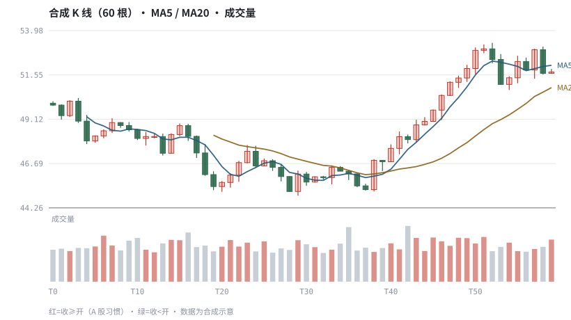

第 16 章K 线、坐标与复权：看图前先校准数据
一根蜡烛只是 OHLC 四价的一种编码，颜色与坐标约定比形态本身更容易骗人。
本章位置：第 15 章讲价格如何形成，本章讲它如何被压缩成图；第 17 章 · 均线、趋势与支撑阻力 起在这些数据上叠加均线、指标与形态规则。
一根 K 线是 group by bucket 后的聚合记录，low ≤ min(o,c) ≤ max(o,c) ≤ high 是它的 schema 约束。颜色只是前端 theme，不是数据字段。
- 能从 OHLCV 生成 K 线，并说明实体、上影、下影的定义。
- 能解释 A 股与海外市场颜色约定相反的原因。
- 能说明线性坐标与对数坐标在长期图上的差别。
- 能在看图前完成复权、周期与坐标三项校准。
§知识点地图
每个知识点都配了 1～2 个扩展学习链接；本章完整资源清单见 扩展学习。
| # | 知识点 | 扩展学习 | 状态 |
|---|---|---|---|
| 1 | K 线实体与影线 | Candlestick chart · OHLC chart | 正文已覆盖 |
| 2 | 颜色约定与涨跌 | Candlestick chart · OHLC chart | 正文已覆盖 |
| 3 | 开高低收的不变式 | Candlestick chart · OHLC chart | 正文已覆盖 |
| 4 | 线性坐标与对数坐标 | Logarithmic return · Rate of return | 正文已覆盖 |
| 5 | 周期与聚合 | Candlestick chart · OHLC chart | 正文已覆盖 |
| 6 | 复权与拆股 | Stock split · Adjusted closing price | 正文已覆盖 |
| 7 | 成交量与换手率 | Volume (finance) · OHLC chart | 正文已覆盖 |
| 8 | 缺口 | Chart pattern · OHLC chart | 正文已覆盖 |
§16.1把一根 K 线写成断言
low ≤ min(open, close) ≤ max(open, close) ≤ high | volume ≥ 0
实体 = |close − open|，上影 = high − max(open, close)，下影 = min(open, close) − low。这三个量描述的是期内多空拉锯，不含任何预测能力。把上面那条不变式写成数据校验，能挡住绝大多数脏行情。
| 形态 | 判定条件 | 常见解读 | 为什么容易误读 |
|---|---|---|---|
| 长实体阳线 | close > open 且实体/振幅大 | 买方占优 | 可能是低流动性下的少量成交 |
| 长上影 | 上影 ≫ 实体 | 冲高回落 | 可能是集合竞价或瞬时插针 |
| 长下影 | 下影 ≫ 实体 | 探底回升 | 停牌复牌、除权日会造成假影线 |
| 十字星 | |close − open| ≈ 0 | 多空均衡 | 阈值取多少完全是人为约定 |
§16.2三个必须先校准的口径
- 复权：分红送转会造成价格断层，未复权图上的「暴跌」通常是假信号（第 06 章）。
- 坐标：线性坐标下早期波动被压扁，对数坐标让等比例变化等距；长期比较收益率应该用对数刻度。
- 周期：日线、周线、月线是对同一逐笔流的不同 group by，同一「支撑位」在不同周期未必是同一个价位。
- 颜色：A 股习惯红涨绿跌，多数海外终端相反；先看图例，不要凭直觉判方向。
交易 App 上的 K 线叠加了许多默认指标与自选配色。把界面设置与数据口径记进实验记录，否则换一台设备就可能得到不同结论。
§16.3成交量是第二维，不是装饰
成交量 tells 有多少份额换手，换手率把它按流通盘归一化，才便于跨标的比较。放量可以来自分歧加大，也可以来自指数调样、ETF 申赎或大单拆单；第 23 章会把资金流与拥挤度单独拿出来做证据检验。
§Python 分析实例
实验 16-1 · 合成 OHLCV、K 线图与数据不变式校验
#!/usr/bin/env python3
# -*- coding: utf-8 -*-
"""生成 60 根带趋势与均线的合成 K 线，画 K 线+成交量+均线，并统计影线。
数据为合成数据或模型示意，仅用于教学，不构成投资建议。
"""
from __future__ import annotations
import math
import pathlib
import random
import statistics
import sys
sys.path.insert(0, str(pathlib.Path(__file__).resolve().parents[3] / "tools"))
from chart import Chart, candlestick, heatmap, BLUE, RED, GREEN, AMBER
FIG = pathlib.Path(__file__).resolve().parents[1] / "fig"
FIG.mkdir(exist_ok=True)
random.seed(7)
# ---- 参数区 ----
N = 60 # K 线根数
START = 50.0 # 起始价
DRIFT = 0.0015 # 日漂移
VOL = 0.014 # 日波动
MA_FAST, MA_SLOW = 5, 20
# ---- 计算与作图 ----
rng = random.Random(7)
ohlcv, px = [], START
for _ in range(N):
o = px
px = o * (1 + rng.gauss(DRIFT, VOL))
c = px
h = max(o, c) * (1 + abs(rng.gauss(0, 0.004)))
l = min(o, c) * (1 - abs(rng.gauss(0, 0.004)))
v = int(800000 * (1 + abs(rng.gauss(0, 0.35))))
ohlcv.append((o, h, l, c, v))
bad = 0
for o, h, l, c, v in ohlcv:
if not (l <= min(o, c) and max(o, c) <= h and v >= 0):
bad += 1
closes = [r[3] for r in ohlcv]
def sma(series, w):
return [None if i + 1 < w else statistics.fmean(series[i + 1 - w:i + 1])
for i in range(len(series))]
fast, slow = sma(closes, MA_FAST), sma(closes, MA_SLOW)
candlestick(FIG / "16-candle.svg", ohlcv,
title="合成 K 线（60 根）· MA5 / MA20 · 成交量",
overlays=[(fast, BLUE, "MA5"), (slow, AMBER, "MA20")],
xticks=[(i, "T%d" % i) for i in range(0, N, 10)])
print("K 线图:", str(FIG / "16-candle.svg"))
up = sum(1 for r in ohlcv if r[3] >= r[0])
bodies = [abs(r[3] - r[0]) / r[0] for r in ohlcv]
upper = [(r[1] - max(r[0], r[3])) / r[0] for r in ohlcv]
lower = [(min(r[0], r[3]) - r[2]) / r[0] for r in ohlcv]
doji = sum(1 for b in bodies if b < 0.002)
print("不变式违规=%d | 阳线=%d 阴线=%d 十字星=%d | 平均实体=%.2f%% 上影=%.2f%% 下影=%.2f%%" %
(bad, up, N - up, doji, 100 * statistics.fmean(bodies),
100 * statistics.fmean(upper), 100 * statistics.fmean(lower)))操作：先核对「不变式违规=0」；把 VOL 调到 0.04，观察长影线与十字星数量如何变化。 预期与判读：K 线图把 OHLC 四价编码成实体与影线，叠加均线后更容易看出趋势与滞后。所有统计都来自合成数据，说明形态只是数据描述，不含预测结论。
改参数看趋势：把 MA_FAST 改成 3 与 10，对比均线穿越次数——引出第 17 章的滞后性。 文件位置：part3/16-candlestick/code/16-candle.py

代码块右上角可一键复制；仓库里的 code/*.py 由 tools/extract_code.py 从这些代码块自动抽取。脚本只用标准库、固定 random.seed(7)，运行后写出 fig/*.svg；批量运行用 ./tools/run_python.sh。
§本章参考资料
按本章知识点挑选的精读资料；更多检索入口见 扩展学习。
Candlestick chart
百科 · 参考资料K 线实体、影线与颜色约定
怎么用：K 线实体、影线与颜色约定https://en.wikipedia.org/wiki/Candlestick_chart
OHLC chart
百科 · 参考资料开高低收四价的数据结构
怎么用：开高低收四价的数据结构https://en.wikipedia.org/wiki/Open-high-low-close_chart
Adjusted closing price
百科 · 参考资料前复权/后复权与公司行动处理
怎么用：前复权/后复权对长期图形的影响https://en.wikipedia.org/wiki/Adjusted_closing_price
Volume (finance)
百科 · 参考资料成交量与换手率的信息含量
怎么用：成交量与换手率的信息含量https://en.wikipedia.org/wiki/Volume_(finance)
§常见误区
- 用不复权数据看长期 K 线，把除权跳空当暴跌。
- 忽略 A 股与海外终端颜色相反，凭直觉读反方向。
- 线性坐标下比较相隔十年的涨跌幅。
- 把十字星、长影线当成确定性信号，而阈值其实由自己随意设定。
§习题与思考
- 在示例里实现后复权序列，说明它与前复权图的形状是否一致。
- 把日线聚合成周线，重新计算一根周 K 线的 OHLCV。
- 设计一条「影线异常」的数据校验规则，用于拦截插针行情。
§扩展学习
以下资料按本章知识点挑选，可直接精读或对照真实数据；知识点地图里每一条也挂了 1～2 个直达链接。
- Candlestick chart（百科）：K 线实体、影线与颜色约定
Candlestick chart - OHLC chart（百科）：开高低收四价的数据结构
OHLC chart - Adjusted closing price（百科）：前复权/后复权与公司行动处理
Adjusted closing price - Volume (finance)（百科）：成交量与换手率的信息含量
Volume (finance) - Stock split（百科）：拆股与价格/数量的口径跳变
Stock split
继续扩展：在 Google Scholar 检索本章相关论文 · 在 MIT OCW 检索配套课程 · 在 arXiv 检索预印本 · 全书参考资源总表 · 附录 A 速查与链接总表
§延伸阅读与内链
- 第 17 章 · 均线、趋势与支撑阻力 均线、趋势与支撑阻力；第 18 章 · MACD、RSI、布林带与 KDJ 的数学定义 指标公式；第 20 章 · 用代码画图：SVG 图与看图陷阱 用代码画图与看图陷阱。